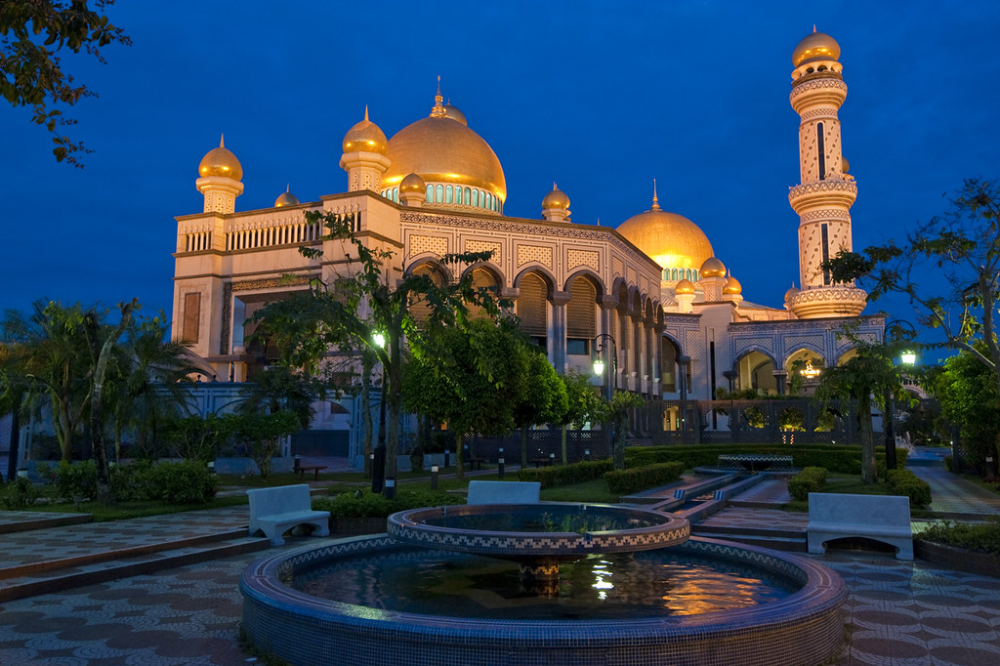
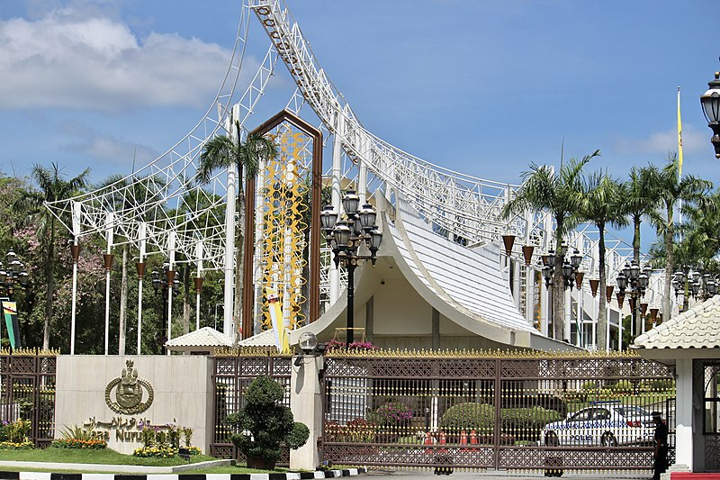
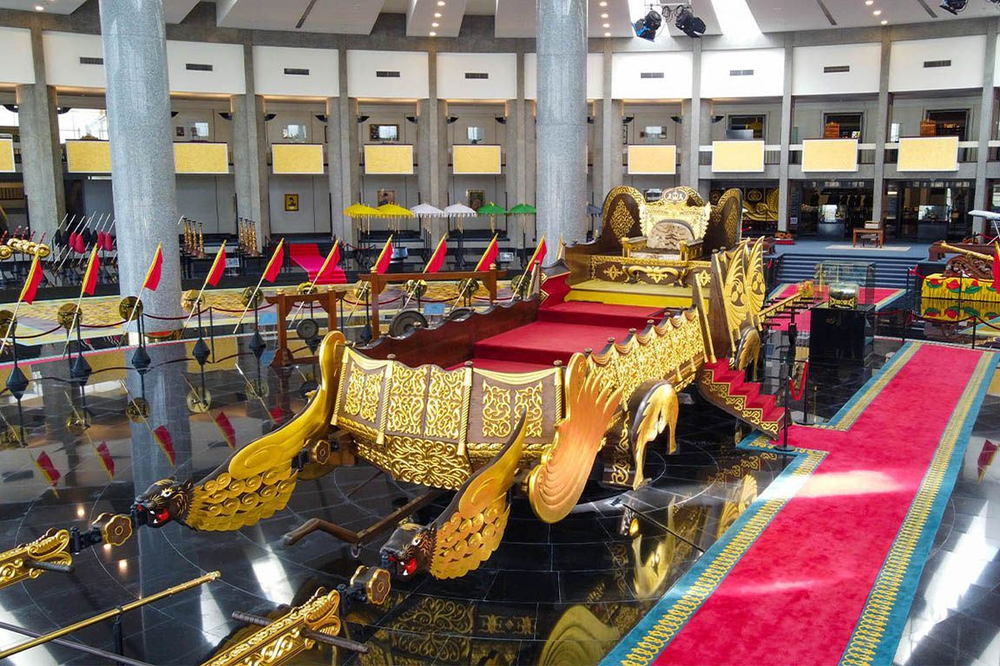
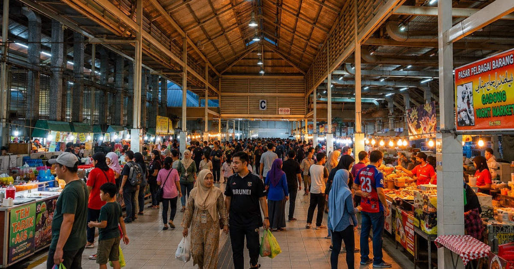
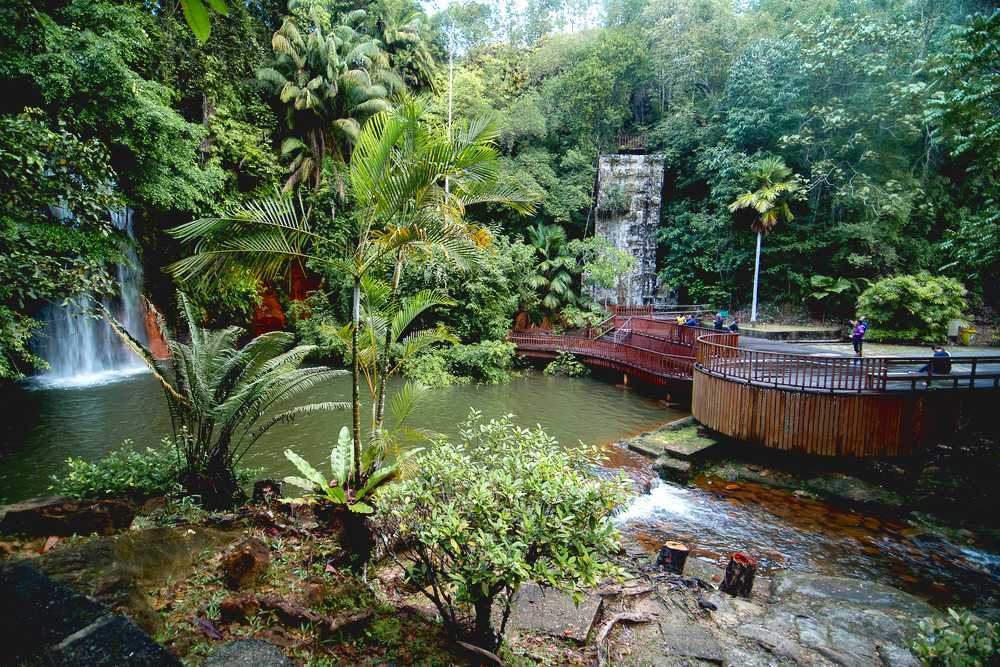
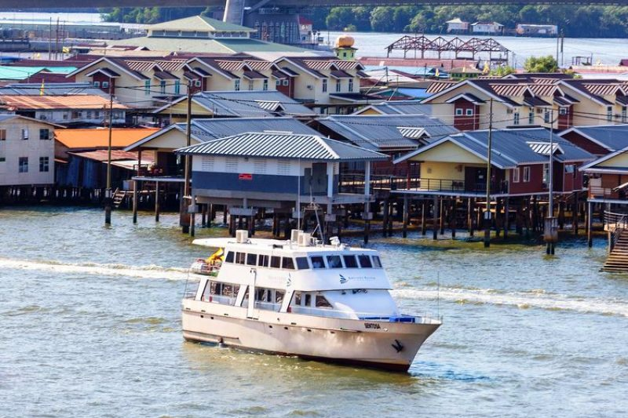

Explore Our Attractions
Find your favorite places to visit in Brunei
DISCOVER BRUNEI · THE COLLECTION
Places Worth Discovering.
Nine places. Different stories. One extraordinary little nation. From historic landmarks and cultural treasures to lush rainforests, discover the places that make Brunei Darussalam unique.

01 — LIVING HERITAGE
Kampong Ayer
Discover life along the Brunei River in Kampong Ayer, a historic water village where traditional homes, wooden walkways and daily life are closely connected to the river.
LOCATION · BRUNEI RIVER

02 — SACRED ARCHITECTURE
Jame' Asr Hassanil Bolkiah Mosque
Admire the mosque's magnificent golden domes, elegant architecture and detailed Islamic designs. It is one of Brunei's most recognisable religious landmarks.
LOCATION · KINSABARU, GADONG

03 — INTO THE WILD
Ulu Temburong National Park
Venture into Brunei's tropical rainforest and experience its rich biodiversity, towering trees and beautiful natural scenery. It is a memorable destination for nature lovers and outdoor adventurers.
LOCATION · TEMBURONG DISTRICT

04 — ROYAL GRANDEUR
Istana Nurul Iman
Discover the official residence of the Sultan of Brunei. Its impressive scale and setting make it an important symbol of the country's monarchy and national identity.
LOCATION · BANDAR SERI BEGAWAN

05 — ROYAL HISTORY
Royal Regalia Museum
Learn about Brunei's royal heritage through ceremonial objects, royal gifts and historical exhibits that showcase the country's monarchy and traditions.
LOCATION · CENTRAL BANDAR

06 — LOCAL FLAVOURS
Gadong Night Market
Experience Brunei's food culture at a lively market filled with local snacks, grilled dishes, fresh produce and traditional favourites. It is a great place to explore everyday local flavours.
LOCATION · GADONG

07 — GREEN ESCAPE
Tasek Lama Recreational Park
Take a break from the city with forest trails, greenery and a refreshing outdoor atmosphere. Tasek Lama is a popular spot for walking, jogging and enjoying nature.
LOCATION · BANDAR SERI BEGAWAN

08 — FUN & ENTERTAINMENT
Jerudong Park
Add some excitement to your visit at this well-known recreational destination. It offers an option for visitors looking for leisure activities and family fun.
LOCATION · JERUDONG

09 — RIVER ADVENTURE
Brunei Mangrove Cruise
Explore Brunei's river ecosystems by boat and discover mangrove landscapes and local wildlife. Depending on the route and conditions, visitors may have opportunities to spot proboscis monkeys.
LOCATION · BRUNEI RIVER
MAKE THE MOST OF YOUR JOURNEY
Ready to Explore Brunei?
Prepare for your trip by learning about the local customs, transportation, accommodation and useful travel tips.
Plan Your Visit